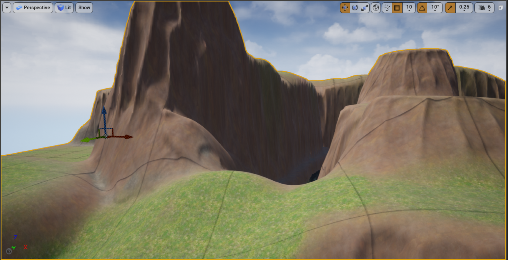
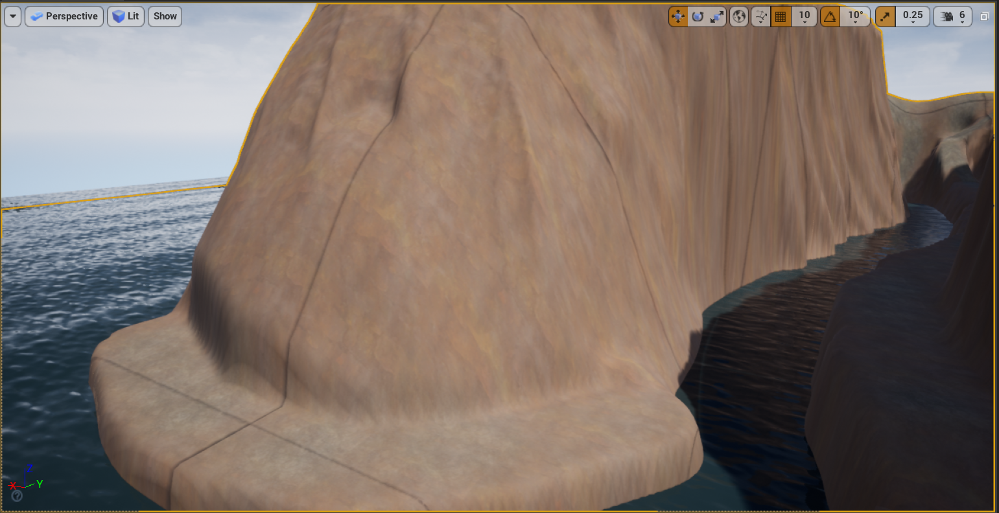
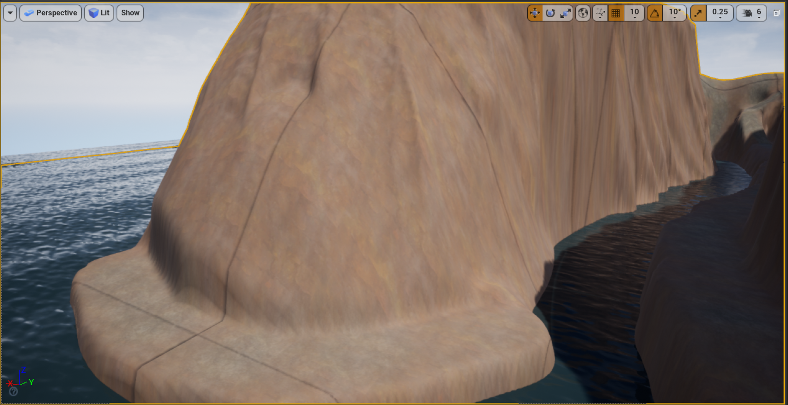

Game Development Projects
Ecto Blob:
I made this game in a few days out of boredom using PixiJS and Vite, and then deployed it using vercel. I'm going to be making more small scoped games like this so that I can get more experience actually finishing projects, instead of starting projects that have way too big of a scope, never to finish them.
Play Ecto Blob! Click here to play.
Smoke Jumpers:
This is a game I made during a week break from school. It was an exercise in fully creating and releasing a game from start to finish, and because it was done all within a one week time frame, I made sure to keep the scope small. In Smoke Jumpers you are a wildland firefighter from the 1940s and you have to use the spacebar to dodge the fireballs for as long as possible!
Unreal Landscape:
I made this landscape and water material in unreal engine 4.27 back in my first semester of college at Southern New Hampshire University.

 

3D Sword Model
This is a 3D model of a sword that I made for a class a couple years ago, and refined and polished for my game capstone course. I used 3DS Max to create the 3D model, and one of the images is showing the model in Unreal Engine 5. This is meant to highlight my skills as a 3D artist.

When I reflect on this 3D model, I remember it taking a huge amount of time, and many different iterations to get it right, compared to how easy it was to texture it and import it into Unreal Engine. It just goes to show how difficult 3D art is. Kudos to you artists out there.
Doom Zombies
This is a small game prototype I made for one of my classes in Unreal engine using C++, Blueprints and some assets. I refined and polished it a bit for my game capstone course by adding a health pickup to the game.
Upon reflection, I accomplished some of the things in this game in regards to combat in very sloppy and naive ways. It would be a ton of work now to fix it, and would honestly benefit more from a completely fresh restart. Moving on with some new Projects will probably be a better idea for me. No use working too hard on something that is lacking a fun game feel or uniqueness to begin with. This is the importance of making a lot of small prototypes to find out what is fun before diving too deep.
Drunken Wizard
This is a small game I created when first learning Unity. It is full of bugs and learning opportunities. The name "Drunken Wizard" came about because when I first made the game I had a bug where the projectiles would shoot in wild directions, not in the direction of the mouse. I couldn't figure out the cause of this bug, so I just named the game after it. This is a more polished version in which I fixed that bug. Of course when I fixed that bug, more bugs rose from the woodworks and I had to squash them too. Either way, it is a great example of just doing something to learn.
There is a lot to reflect on when looking back at this project. At the time, I was heavily relying on Chat Gpt as a learning tool, and the main thing I learned is that Chat Gpt is an ok starting place sometimes, for small scripts, but it tends to write very messy and difficult to scale code. I've learned now how to problem solve better on my own without relying on this tool and I find I'm writing much better and cleaner code, but I don't know if I would have learned this lesson without doing it the hard way.